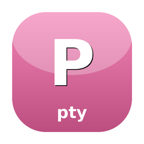

Pseudo-terminal primitive — open / spawn / read / write / resize
Open a master/slave PTY pair, spawn a child process with its stdin/stdout/stderr wired to the slave, and pump bytes / forward resizes between the host terminal and the child. Wraps the libc PTY syscalls (posix_openpt, grantpt, unlockpt, ptsname_r, ioctl(TIOCSWINSZ)) via ext-ffi — no shelling out to /usr/bin/script, no C extension to compile.
composer require sugarcraft/candy-ptyRequires PHP 8.1+ with ext-ffi. ext-pcntl is optional — the lib polls waitpid() when pcntl is absent and SignalForwarder degrades to a no-op.
use SugarCraft\Pty\Pty;
$pty = Pty::open();
$child = $pty->spawn(
['/bin/bash', '-c', 'echo $TERM; date'],
['TERM' => 'xterm-256color'],
100, 30, // cols × rows
);
$pty->setBlocking(false);
$out = '';
while (!$child->exited()) {
$chunk = $pty->read(4096, 0.05); // 50ms timeout
if ($chunk === null || $chunk === '') continue;
$out .= $chunk;
}
$exit = $child->wait();
$pty->close();use SugarCraft\Pty\SignalForwarder;
use SugarCraft\Core\Util\Tty;
SignalForwarder::attachSigwinch(
$pty,
fn () => Tty::size(), // [cols => N, rows => N]
);
// Now every host SIGWINCH triggers $pty->resize($cols, $rows).posix_openpt(O_RDWR | O_NOCTTY) + grantpt + unlockpt + ptsname_r. Failures close the master fd before throwing — callers never get a half-open Pty.proc_open's [0,1,2] descriptor slots and resizes via TIOCSWINSZ before the child starts. Pass controllingTerminal: true to route through bin/pty-shim.php for Ctrl+C → SIGINT delivery (requires ext-pcntl). Returns a Child with pid + idempotent wait() + non-blocking exited().read($len, $timeout) returns null on timeout, '' on EOF, bytes otherwise. Non-blocking + stream_select with EINTR retry. write returns bytes actually written.size() reads back via TIOCGWINSZ. Platform-aware constants for Linux + macOS.Pty::resize() via a caller-supplied size provider, plus optional SIGCHLD reaper. Defaults pcntl_async_signals(true); falls back cleanly when pcntl is missing.libc.so.6 on Linux, /usr/lib/libSystem.B.dylib on macOS. Override via env var for musl, Alpine, or custom sysroots.Pass controllingTerminal: true to spawn() when you need Ctrl+C typed at the master to deliver SIGINT to the child — required for interactive shells (bash -i), editors (vim, less), and anything else that uses tty-driven job control.
$child = $pty->spawn(
['/bin/bash', '-i'],
env: [...],
controllingTerminal: true, // claim slave as the child's ctty
);
$pty->write("\x03"); // Ctrl+C → SIGINT to the childRoutes the spawn through bin/pty-shim.php, which does setsid() + ioctl(0, TIOCSCTTY, 0) + pcntl_exec() between proc_open and the actual cmd. Requires ext-pcntl. Costs ~5-50 ms of shim startup per spawn — opt-in because non-interactive spawns don't benefit.
| Class | Method | Description |
|---|---|---|
| Pty | open() | Allocate master/slave PTY pair |
| Pty | spawn(cmd, env, cols, rows) | Spawn child process with PTY |
| Pty | read(len, timeout) | Read bytes from PTY |
| Pty | write(data) | Write bytes to PTY |
| Pty | resize(cols, rows) | Resize terminal window |
| Pty | size() | Get current terminal size |
| Pty | close() | Close the PTY |
| SignalForwarder | attachSigwinch(pty, provider) | Forward SIGWINCH to PTY resize |
| Child | pid | Child process ID |
| Child | exited(), wait() | Check/await child exit |